Problem: Evaluating NFL kickers accurately presents a significant challange due to the low sample sizes and varying contexts of field goal attempts, and is made even more challenging to do midseason. Tradditional metrics often struggle to provide insights into true player skill when sample sizes are limited.
Solution: This is a proposed Bayesian hierarchical model designed to evaluate the performance of NFL kickers. The model accounts for both individual player skill, and the non-linear relationship between kick distance and the probability of success. By estimating unique player effects and then applying these predictions to a standardized set of simulated kicks (25-60 yards), I derive a contextualized and stable evaluation metric.
Key Findings: The Simulated Field Goal Over Expected (FGOE) metric, generated by this model, offers a superior and more reliable assessment of kicker performance compared to traditional observed metrics. This approach successfully mitigates the noise introduced by small sample sizes, enabling better comparisons across players. For example, this analysis demonstrates how the Simulated FGOE accurately positions elite kickers like Justin Tucker at the top, even when their traditional FGOE is skewed by things such as blocked kicks.
Impact: This model provides a way to quantify kicker performance. It not only offers a clear “rating” metric, but also quantifies the uncertainty surrounding each player’s estimated skill through credible intervals. This allows decision-makers to distinguish between genuinely high-performing kickers and those whose performance might be inflated by favorable circumstances or limited data. Players with fewer historical kicks will naturally show larger uncertainty bands, providing a realistic view of the confidence in their evaluation, while consistently strong performers will show tighter, higher-valued estimates. These insights empower scouting teams and analysts to make more informed player personnel decisions.
Any code not directly related to the model or derived metrics, such as plotting functions or library imports, have been collapsed to improve readability. You can expand these code blocks by clicking on them.
All necessary library imports and custom utility functions for data preparation, modeling, and plotting are defined below:
Code
import polars as plfrom patsy import dmatriximport pymc as pmimport numpy as npimport arviz as azimport pandas as pdfrom plotnine import*from pathlib import Pathimport polars.selectors as csfrom great_tables import GT, md, htmlpalette = ["#001e42", "#535c78", "#9fa3b3", "#f1f1f1", "#ffbea4", "#ff895a", "#ff4b00"]def player_index(df: pl.DataFrame) -> pl.DataFrame:return ( df[["player_id", "player_name"]] .unique() .with_columns(player_idx=pl.col("player_id").to_physical().cast(pl.Int64)) )def prep_dataset() -> pl.DataFrame:""" Create the base dataframe combining the two data sources Returns: pl.DataFrame: dataframe of field goal attempts with kicker info """ df_field_goals = pl.read_csv("data/field_goal_attempts.csv") df_kickers = pl.read_csv("data/kickers.csv") df = ( df_field_goals.join(df_kickers, on="player_id") .rename({"attempt_yards": "distance"}) .with_columns( success=pl.when(pl.col("field_goal_result") =="Made") .then(pl.lit(1)) .otherwise(pl.lit(0)), player_id=pl.col("player_id").cast(pl.Utf8).cast(pl.Categorical), player_name=pl.col("player_name").cast(pl.Categorical), season_type=pl.col("season_type").cast(pl.Categorical), ) ).with_columns( distance_std=(pl.col("distance") - pl.col("distance").mean())/ pl.col("distance").std() )return dfdef make_pymc_data(df): spline_basis = dmatrix("bs(distance_std, df=3, include_intercept = False) - 1", # removed include_intercept=True) - 1", data=df.to_pandas(), return_type="dataframe", )return {"distance": df["distance_std"].to_numpy(),"spline_array": np.asarray(spline_basis, order="F"),"player": df["player_id"].to_physical().cast(pl.Int64).to_numpy(),"player_cat": df["player_id"].cat.get_categories(),"spline_shape": np.arange(spline_basis.shape[1]),"spline_basis": spline_basis, }def get_jt(df): shape = df.shape[0] var = df.with_row_index().filter(pl.col("player_name") =="Justin Tucker")["index"][0 ]return shape - vardef pointrange_data( df: pl.DataFrame | pd.DataFrame, field: str="fgoe", group: list= ["player_id", "player_name"],) -> pl.DataFrame:""" Returns `arviz.hdi()` values from a long dataframe. These values are used to produce high density credible intervals for plots. Args: df: dataframe that contains multiple records per group field: (str, optional) field to aggreagate hdci on group: (list, optional) fields to group aggregations by Returns: pl.DataFrame: dataframe with 1 row per group and hdci intervals """ifisinstance(df, pd.DataFrame): df = pl.from_pandas(df)# Custom function to extract HDI boundsdef hdi_bounds(values, prob=0.9): hdi_result = az.hdi(values.to_numpy(), hdi_prob=prob)return hdi_result[0], hdi_result[1] # lower, upperdef hdi_bounds_50(values): hdi_result = az.hdi(values.to_numpy(), hdi_prob=0.5)return hdi_result[0], hdi_result[1] # lower, upper data = ( df.group_by(group) .agg( fgoe=pl.col(field).median(), hdi_90=pl.col(field).map_elements(lambda x: hdi_bounds(x, 0.9), return_dtype=pl.List(pl.Float64) ), hdi_50=pl.col(field).map_elements(lambda x: hdi_bounds_50(x), return_dtype=pl.List(pl.Float64) ), ) .with_columns( ymin=pl.col("hdi_90").list.get(0), ymax=pl.col("hdi_90").list.get(1), hdi_lower=pl.col("hdi_50").list.get(0), hdi_upper=pl.col("hdi_50").list.get(1), ) .drop(["hdi_90", "hdi_50"]) .with_columns( highlight=pl.when(pl.col("player_name") =="JUSTIN TUCKER") .then(pl.lit(palette[-1])) .otherwise(pl.lit(palette[1])) ) .sort("fgoe", descending=True) )return datadef title_name(df: pl.DataFrame | pd.DataFrame):""" Title case names, primarily for plots. """ifisinstance(df, pl.DataFrame):return df.with_columns(pl.col("player_name").cast(pl.Utf8).str.to_titlecase())elifisinstance(df, pd.DataFrame):return df.assign(player_name=lambda x: x.player_name.str.title())else:raiseValueErrordef ggpointinterval( df: pl.DataFrame, title: str, axis_label: str, figure_size=(6, 8), axis_text_size=10): df_plot = pointrange_data(df) df_plot = title_name(df_plot)return ( ggplot( df_plot, aes("reorder(player_name, fgoe)", "fgoe", color="highlight"), )+ geom_pointrange(aes(ymin="ymin", ymax="ymax"))+ geom_linerange(aes(ymin="hdi_lower", ymax="hdi_upper"), size=1.5)+ coord_flip()+ scale_color_identity()+ labs( title=title, y=axis_label, )+ theme_minimal()+ theme( legend_position="none", axis_title_y=element_blank(), figure_size=figure_size, dpi=100, panel_grid_minor=element_blank(), panel_grid_major_y=element_blank(), axis_text_y=element_text(size=axis_text_size), )+ geom_hline(yintercept=0, linetype="solid")+ geom_vline(xintercept=get_jt(df_plot), linetype="dotted", color=palette[-2]) )
Data
df = prep_dataset()df.head()
shape: (5, 14)
season
season_type
week
game_date
game_key
play_id
play_sequence
player_id
field_goal_result
distance
player_name
birthdate
success
distance_std
i64
cat
i64
str
i64
i64
i64
cat
str
i64
cat
str
i32
f64
2010
"Pre"
1
"8/8/2010"
55073
433
17
"34623"
"Made"
20
"DAVID BUEHLER"
"2/5/1987"
1
-1.723446
2010
"Pre"
1
"8/8/2010"
55073
2661
104
"34623"
"Missed"
49
"DAVID BUEHLER"
"2/5/1987"
0
1.079384
2010
"Pre"
1
"8/8/2010"
55073
2772
109
"34623"
"Made"
23
"DAVID BUEHLER"
"2/5/1987"
1
-1.433498
2010
"Pre"
1
"8/8/2010"
55073
1604
64
"34623"
"Made"
34
"DAVID BUEHLER"
"2/5/1987"
1
-0.370356
2010
"Pre"
2
"8/12/2010"
55076
3086
123
"34623"
"Made"
28
"DAVID BUEHLER"
"2/5/1987"
1
-0.950251
The data contains kicks for multiple seasons, where each kick event is a row. Each kick has a possible of 3 outcomes:
There is supporting evidence of a non-linear relationship between kick distance and success rate, as shown in the plot below. Using splines in the model will allow us to estimate this relationship much more realistically than a quadratic model.
Additionally, players have varying skill levels that traditional analytics cannot fully capture. The sparse data and hierarchical structure of the underlying process makes this well-suited for hierarchical modeling methods.
I will begin by building a simple model incorporating both kick distance (via splines) and individual player effects as primary features.
Model Setup, Priors & Justification
With the individual observed kicks, the scope of this analysis will be to estimate individual player’s probability of success. The following model was used:
The distribution of player effects share the same sigma parameter
Spline with basis functions applied to distance
This model generates player-specific intercepts that adapt based on individual performance and data availability. Players with more observations will have their estimates pulled toward their own performance, while those with limited data will remain closer to the population prior. The shared variance across all players creates partial pooling, where information is borrowed between players to improve estimates for those with limited data.
Priors
Student-t priors were chosen for their heavier tails, providing more robust estimates to handle outliers or less certain prior knowledge. This is particularly useful for individual player effects.
One of the strengths of Bayesian modeling is the ability to incorporate domain knowledge through prior distributions. For instance, we expect field goals from typical distances — such as 30 yards — to be successful more often than not. To reflect this, I placed a prior on the intercept of \(Normal(1, 1)\), which corresponds to a probability greater than 50% (with the use of the logit link function).
data = make_pymc_data(df)COORDS = {"splines": data["spline_shape"],"player_id": data["player_cat"],}
The plot shows how each component contributes to the model. The probability p is the parameter of interest. The spline data, spline weights, and global intercept contribute to a probability baseline that will later be used to compare player effects.
After specifying the model structure and priors, a diagnostic tool in prior predictive checks help assess whether the model generates realistic values. In this case, since field goals are made more often than missed, the prior predictive distribution should reflect more success.
The results from the prior predictive check suggest that the priors lead to outcomes consistent with the expectation, indicating that the model has a plausible data-generating process.
Fitting the model
The model fits by sampling the posterior distribution of the paramters. The following plot visualizes the posterior distributions of parameters, as well as rank bars for the chains. A uniform distribution indicates a good mixing of the chains.
The Markov Chain Monte Carlo (MCMC) algorithm used to sample modern baye. While these diagnostics don’t account for causality implications or domain-specific modeling checks, they help to ensure the MCMC algorithm is working as expected. All chains converged without divergent transitions, and effective sample sizes are adequate.
az.summary(idata, var_names=params)
mean
sd
hdi_3%
hdi_97%
mcse_mean
mcse_sd
ess_bulk
ess_tail
r_hat
alpha
4.624
0.298
4.057
5.171
0.007
0.005
1881.0
2145.0
1.0
w[0]
-3.745
0.775
-5.234
-2.342
0.018
0.013
1775.0
1834.0
1.0
w[1]
-2.794
0.464
-3.646
-1.936
0.009
0.007
2522.0
2439.0
1.0
w[2]
-7.392
0.820
-8.863
-5.784
0.020
0.014
1678.0
1894.0
1.0
1|player_id[0]
-0.091
0.213
-0.527
0.288
0.003
0.004
6586.0
3040.0
1.0
...
...
...
...
...
...
...
...
...
...
1|player_id[133]
-0.157
0.249
-0.630
0.289
0.004
0.005
4407.0
2441.0
1.0
1|player_id[134]
-0.059
0.236
-0.526
0.368
0.003
0.004
4789.0
2922.0
1.0
1|player_id[135]
-0.044
0.261
-0.572
0.411
0.003
0.005
6609.0
3017.0
1.0
1|player_id[136]
-0.001
0.256
-0.477
0.481
0.003
0.005
5534.0
2703.0
1.0
sigma
0.249
0.051
0.153
0.345
0.001
0.001
1187.0
2052.0
1.0
142 rows × 9 columns
The following table summarizes these diagnostics across the model parameters. The distribution of bulk and tail ESS values, along with r_hat, to ensure all parameters were sampled adequately and that the posterior inferences are trustworthy.
The plot below shows that the model produces predictions consistent with the observed data, suggesting that the model’s assumptions and structure are appropriate for summarizing performance.
with model: df_ppd = pm.sample_posterior_predictive(idata, var_names=['y_rep'], random_seed=123)
The table below summarizes the posterior distributions for each player’s individual effect on the baseline probability of success, after controlling for kick distance.
While these individual player effects help understand the model’s insights into each kicker’s baseline skill, their direct interpretation as raw coefficients can be challenging to communicate to non-technical stakeholders as an intuitive standalone evaluation metric. This is why I will move towards the Simulated Field Goal Over Expected (FGOE), which translates these effects into a more relatable and actionable rating of expected performance on a standardized set of kicks.
Spline
The table below shows the summary of spline coefficient distributions.
az.summary(idata, var_names=["alpha", 'w'])
mean
sd
hdi_3%
hdi_97%
mcse_mean
mcse_sd
ess_bulk
ess_tail
r_hat
alpha
4.624
0.298
4.057
5.171
0.007
0.005
1881.0
2145.0
1.0
w[0]
-3.745
0.775
-5.234
-2.342
0.018
0.013
1775.0
1834.0
1.0
w[1]
-2.794
0.464
-3.646
-1.936
0.009
0.007
2522.0
2439.0
1.0
w[2]
-7.392
0.820
-8.863
-5.784
0.020
0.014
1678.0
1894.0
1.0
Unlike player effects, they are not as easily interpretable in a table. The plots below are to help build an understanding of how they come together.
Basis functions
There are 3 basis functions used in the model. Below is a plot of each basis function and it’s new shape after learning parameter weights.
Code
def create_spline_table() -> pl.DataFrame:""" Takes the parameter means from the posterior and applies them to the spline basis dataframe. This allows for plotting the estimated spline functions. Returns: pl.DataFrame: long spline bf dataframe """ w = idata.posterior["w"].mean(["chain", "draw"]).valuesreturn ( pl.DataFrame(data["spline_basis"].values * w.T) .with_columns(distance=df["distance"].to_numpy()) .unpivot(cs.starts_with("col"), index="distance") .with_columns(pl.col("variable").str.extract(r"(\d+)")) )def create_spline_table_with_hdi(hdi_prob:float=0.95) -> pl.DataFrame:""" Creates a dataframe with the high density intervals for the aggregated spline function. Returns: pl.DataFrame """# Get HDI bounds hdi_bounds = az.hdi(idata.posterior["w"], hdi_prob=hdi_prob) w_lower = hdi_bounds["w"].sel(hdi="lower").values w_upper = hdi_bounds["w"].sel(hdi="higher").values# Create dataframes for lower and upper bounds df_lower = ( pl.DataFrame(data["spline_basis"].values * w_lower.T) .with_columns(distance=df["distance"].to_numpy()) .unpivot(cs.starts_with("col"), index="distance") .with_columns(pl.col("variable").str.extract(r"(\d+)")) .group_by("distance") .agg(pl.col("value").mean().alias("lower")) ) df_upper = ( pl.DataFrame(data["spline_basis"].values * w_upper.T) .with_columns(distance=df["distance"].to_numpy()) .unpivot(cs.starts_with("col"), index="distance") .with_columns(pl.col("variable").str.extract(r"(\d+)")) .group_by("distance") .agg(pl.col("value").mean().alias("upper")) )return df_lower.join(df_upper, on="distance")df_spline = create_spline_table()( ggplot(df_spline, aes("distance", "value", color="factor(variable)"))+ geom_line(size=1.2)+ labs(title="Basis Function Shape", color="bf")+ theme_minimal()+ theme(legend_position="top")+ labs(x="Distance", y="Value")# + scale_color_manual(values=[palette[0], palette[1], palette[-3], palette[-2]]))

Aggregated spline
Finally, they can be aggregated together to produce the estimated effect of distance on FG success.
What I outlined in my application was establishing at minimum a Field Goal Over Expected model. This contextualizes each kick and helps identify players over or underperforming relative to expectation. This metric is used across multiple sports because it’s intuitive and easily digestible, especially for audiences with less analytical training. It does a better job than raw completion rate, but has room for improvement.
2018 results
To calculate a traditional FGOE, the average expected probabilities accounting for distance and removing the player grouping effects can be used. FGOE is simply the observed event minus those expected probabilites. This can be done with any point estimate, but with a Bayesian methods we have a distribution of values to use.
Utility Functions:
Code
def add_avg_draws( df: pl.DataFrame, data: dict= data, model: pm.Model = model) -> pl.DataFrame:""" Get the predicted probabilities on distance without player effects. Similar to `bambi.Model.predict(..., infer_group_specific=False)` or `tidybayes::add_epred_draws(..., re_formula = NA`)`. These are used to calculate the FGOE metrics. """ design_info = data["spline_basis"].design_info spline_array = data["spline_basis"].values _spline_array = dmatrix(design_info, df.to_pandas(), return_type="dataframe").valueswith model: pm.set_data( {"player_idx": np.zeros_like( df["player_id"].to_numpy(), dtype=np.int64 ), # or exclude entirely"spline_data": _spline_array, } ) pred_baseline = pm.sample_posterior_predictive(idata, var_names=["p_baseline"]) df_pred_baseline = pl.from_pandas( pred_baseline.posterior_predictive["p_baseline"].to_dataframe().reset_index() ).rename({"p_baseline_dim_0": "__obs__"})return df_pred_baselinedef add_epred_draws( df: pl.DataFrame, var_name: str, data: dict= data, model: pm.Model = model) -> pl.DataFrame:""" Get the predicted probabilities on distance with player effects. Similar to `bambi.Model.predict(..., infer_group_specific=True)` or `tidybayes::add_epred_draws(..., re_formula = NA`)`. These are used to calculate the FGOE metrics. Returns: pl.DataFrame """ design_info = data["spline_basis"].design_info spline_array = data["spline_basis"].values _spline_array = dmatrix(design_info, df.to_pandas(), return_type="dataframe").valueswith model: pm.set_data( {"player_idx": df["player_id"].to_physical().cast(pl.Int64).to_numpy(),"spline_data": _spline_array, } ) df_y = pm.sample_posterior_predictive( idata, var_names=[var_name], extend_inferencedata=False ) _df = pl.from_pandas( df_y.posterior_predictive[var_name].to_dataframe().reset_index() ) _df.columns = ["chain", "draw", "__obs__", var_name]return _dfdef create_fgoe_table(df: pl.DataFrame) -> pl.DataFrame:""" Take the player, distance dataframe and calculate FGOE by subtracting the probability without player effect from the probability with player effects. This gives the foundation of ways to evaluate kickers. Returns: pl.DataFrame """ _df_epred_baseline = add_avg_draws(df) _df_epred = add_epred_draws(df, "p") cols = [ xfor x in ["player_name", "player_id", "distance", "success"]if x in df.columns ] df_fgoe = ( df.select(cols) .with_row_index("__obs__") .join(_df_epred_baseline, on="__obs__") .join(_df_epred, on=["chain", "draw", "__obs__"]) .with_columns(fgoe=pl.col("p") - pl.col("p_baseline")) )return df_fgoe
The problem with this metric? Justin Tucker is represented as a replacement-level kicker or worse in 2018? Historically, Tucker has been one of the best kickers in the league going into the 2018 season. Pitching this metric and leaderboard in 2018 would have been difficult, and rightfully so.
2016-2017 results
Looking at the previous 2 seasons, Tucker’s Traditional FGOE metric stood out amoung the rest.
It isn’t impossible, but it should be unlikely that he dropped from an outlier lead, to one of the worst in 6 weeks.
The problem with using this metric alone is that limited sample sizes can introduce a significant amount noise. Upon examining the dataset, there were multiple blocked field goals against Tucker. While outside the scope of this analysis, it’s uncertain how much credit should be assigned to the kicker versus the blocking on the play for blocked kicks.
2018 results - without blocks
When blocked kicks are removed, the model results align a little better with expectations.
However, this approach is arbitrary as it requires manual intervention that doesn’t provide a way to account for such events within the model itself, highlighting the need for a better solution.
Simulated FGOE
The model allows us to extract each player’s parameter distributions as well as distance effects, and apply it to simulated data. This enables what-if scenarios and projections beyond only observed data. We can establish expectations for what each kicker could make in this hypothetical world where they each attempt the same set of kicks.
Standardized kick predictions
I chose a linear interval of kicks from 25-60 yards. This decision is arbitrary, but prioritizes simplicity and represents the first step toward gaining organizational buy-in for the leaderboard.
With the simulation of kicks, we can now look at Simulated FGOE. This operates at the scale of posterior sample draws, with each player having 4,000 simulations across a distribution of kicks. This method provides the ability to quantify uncertainty within the estimates and examine the range of potential outcomes, while addressing the sample size problem of a traditional FGOE.
Plotting Simulated FGOE
The plot below shows the posterior distributions of simulated FGOE. Compared to the traditional version, this metric is more stable and less noisy, and it follows intuitive principles that make interpretation easier. Many players cluster around zero, roughly representing replacement level, while deviations in either direction are easy to interpret.
For example, Justin Tucker’s median rating falls between 1 and 4 field goals over expected, with a central estimate of approximately 2.5. That’s far more intuitive and communicable than saying the player’s log-odds intercept increases by 0.2 to 0.8 after adjusting for distance.
Comparing output
To compare traditional and simulated FGOE, we examine their posterior distributions. Simulated FGOE offers a more consistent and interpretable view of player performance. The distributions include credible intervals that reflect the uncertainty in player evaluation, ultimately making the metric more robust and reliable for assessing performance.
Note
The models aren’t necesarily 1:1 comparisons of the same distribution of kicks, because with the traditional FGOE we are limited to the kicks that the kicker attempted. Simulated FGOE is applied to the same set of kicks for each kicker. It is more important to look directionally at each model. Easily shown is Justin Tucker is firmly at the top of the list, without having to adjust arbitrarily for blocked kicks.
With the model parameters and simulation, even if a kicker hasn’t attempted a 60 yard kick - we can provide an estimate for what that might look like. Probability curves by distance can help visualize comparisons between players.
The table below presents the generated leaderboard, showcasing the Player Id, Player Name, Rating (Simulated FGOE), and Rank for the top 10 and bottom 10 kickers evaluated by the model. The Rank column is in ascending order, where a lower rank indicates a better performance. The Top 5 and Top 10 columns indicates the percentage of simulations in which a player ranked among the top 5 and top 10 kickers, offering a probabilistic measure of their high-end outcomes.
Justin Tucker consistently ranks at the top of the leaderboard, demonstrating a high likelihood of being among the top 5 kickers by this metric. This positioning, even in seasons with a lot of variance (like 2018’s blocked kicks), highlights the model’s ability to provide a more stable and accurate assessment of true skill.
Robert Aguayo’s ranking reflects the influence of partial pooling from his prior seasons, contributing to his lower-end position despite a potentially stronger 2018 performance.
Tyler Davis with only a single kick in the dataset (which was missed), has a very wide credible interval. This indicates that while the model provides a point estimate, there is substantial uncertainty, suggesting his true skill could credibly range from one of the worst kickers to a top 5 performer. This demonstrates the model’s ability to quantify uncertainty, allowing decision-makers to understand the confidence level in each player’s evaluation, especially for those with sparse data.